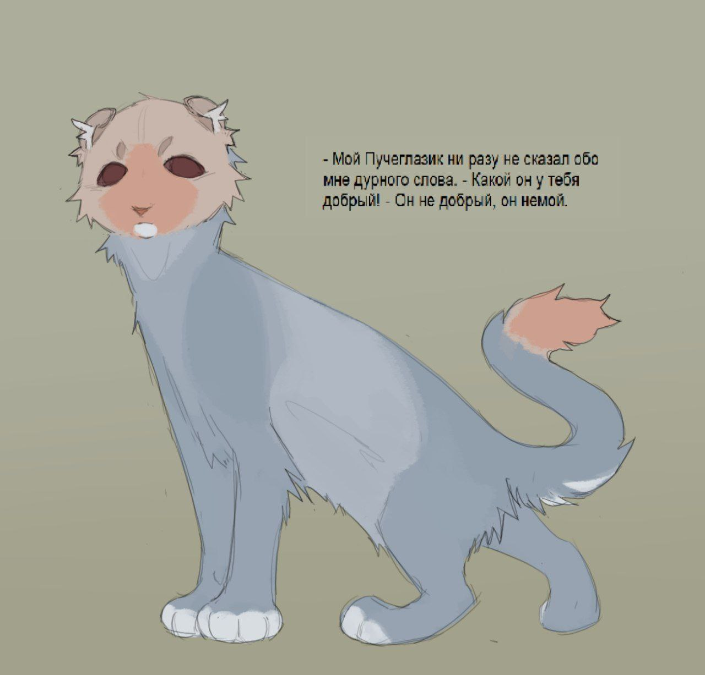
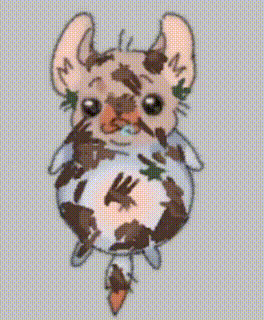
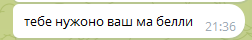

Пучеглазик

етот жоский кот немой вы прекиньте он общаеца то на языке жестоф то карточками то как пчолка танцуед... всевшоке...
а так он конешно отменный друк в беде не бросит лишнего НЕ СПРОСИТ))))0 интересно почему
ᚺᛖᚨᚹᛃ : ᚲᚺᛟᛁᚲᛖ
тяжелый выбор
он выглядет как персик в голубичном йогурте если хотите его полизать обязательно подождите пока ево намоет сюссечко ну или блохочос опять губочкой вош хиз белли иначе будет вкус грязи на язычке
 Жизнь
детство пучеглазека было веселым, а вот ученичество далос тяжко
бедний пучеглазек потел над пробнеком ИК день и ночь, ден и ноч ночь и ден ето были мучителные часы впитывания информации... каждый неравнодушний прахожий видел бедново пучеглазика, грызящево грант науки и мысленно радовался што ета пытка или предстоит позжжже или уже позади
даше 750бу за ден далис ему лехко инезатейливо посравненю с НАПРЯГАНИЕМ МОЗГА...
одАко победиф все злые проьнеки и росомахи маленьки пучеглазек перестал быть маленьким, ведт настал знаменательный день посвящения в воители
ето было очен трогательное событие для всей стаи, волки дружно сбилис в кучу и громок радовалис за собрата
вотак пучиглаз получил свой суперкрутои тотем дикобраз. ещо и впечатлил всех своей речью истал олицетворением впечатлительности
Галерея
@prokazushka